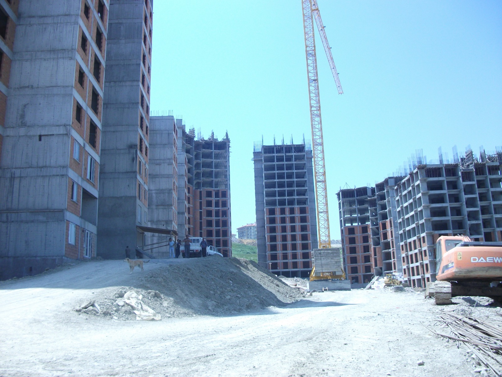
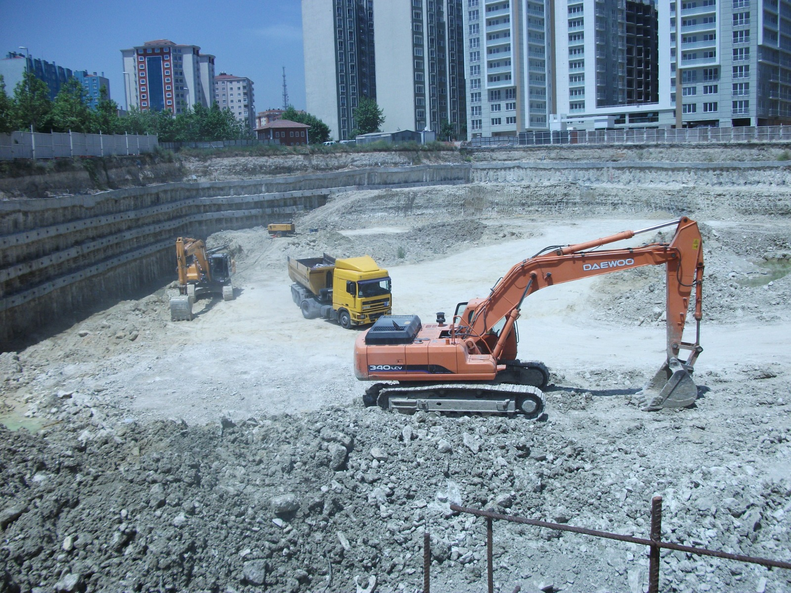

Gerçekleşen ve Devam Eden Projelerimiz
Gerçek şantiye sahalarımız, kentsel dönüşüm bloklarımız, derin zemin iksa çalışmalarımız ve endüstriyel çelik yapılarımızdan kareler.
 Kaba İnşaat (%65)
Kaba İnşaat (%65)
Canikoğlu Park Konutları
Eski ve riskli 4 adet apartman bloğunun yıkılarak yerine çok bloklu, kule vinçli ve radye jeneral temelli modern konut projesi.

Taahhüt İnşaatı Devam EdiyorMarmara Vizyon Blokları
Ada bazlı kentsel dönüşüm taahhüdümüz kapsamında zemin iyileştirmesi, kule vinç ve ağır iş makineleriyle yürütülen güvenli şantiye.
 İnce İşçilik & Teslim Aşaması
İnce İşçilik & Teslim Aşaması
Modern Şehir Konutları
Tasarımından teslimine Canikoğlu İnşaat güvencesiyle; A1 sınıfı taşyünü mantolama, kompozit dış cephe ve lüks iç dekorasyon imalatları.
 Başarıyla Teslim Edildi
Başarıyla Teslim Edildi
Endüstriyel Çelik & Yangın Merdiveni
Statik hesaplamaları mühendislerimizce yapılmış, deprem ve yangın yönetmeliklerine %100 uyumlu galvaniz kaplı ağır çelik taşıyıcı sistem.
 Tamamlandı & İskân Alındı
Tamamlandı & İskân Alındı
Spor & Yaşam Kompleksi Prekast Tribün
Özel statik mühendislik çözümü gerektiren geniş açıklıklı çelik uzay çatı sistemi ve prekast betonarme tribün basamakları imalatı.

Zemin İksa TamamlandıVadi Rezidans Derin Kazı & Fore Kazık
Çevre binaların güvenliğini sıfır riskle koruyan -18 metre derin kazı hafriyatı, donatılı fore kazıklar ve öngermeli ankraj iksa perdeleri.